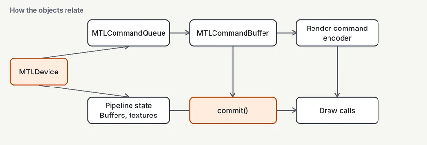

Per iniziare
Introduzione#
Prima di disegnare qualcosa conviene sapere che cos'è Metal, che cosa non è e come si incastrano i suoi pezzi.
Questo capitolo è fatto solo di concetti, senza codice.
Il prossimo apre Xcode.
Che cos'è Metal#
Metal è l'API di basso livello di Apple per parlare con la GPU.
Fa due lavori:
- Rendering: trasformare triangoli in pixel, l'argomento di quasi tutto questo sito.
- Calcolo: eseguire sulla GPU codice parallelo di uso generale, a cui arriviamo nella sezione Oltre.
Gira su macOS, iOS, iPadOS, tvOS e visionOS, ed è l'unica API grafica di prima classe su queste piattaforme.
OpenGL e OpenCL lì sono deprecate dal 2018.
SceneKit, RealityKit, SpriteKit, Core Animation e i motori di gioco come Unity e Unreal poggiano tutti su Metal quando girano su hardware Apple.
Metal è di basso livello nel senso che mostra come lavora davvero una GPU: sei tu ad allocare i buffer, descrivere le pipeline e registrare i comandi.
È anche molto più amichevole di Vulkan o Direct3D 12.
C'è molto meno codice di contorno, esistono valori predefiniti sensati e gli strumenti di debug di Xcode sono eccellenti.
Gli oggetti che incontrerai#
In Metal quasi tutto viene creato a partire da un solo oggetto, il device, e quasi tutti i nomi dei tipi iniziano con MTL.
Il cast è ridotto:
| Oggetto | Ruolo |
|---|---|
MTLDevice |
La GPU. Fabbrica di tutto il resto. |
MTLCommandQueue |
Una fila ordinata di lavoro in attesa della GPU. |
MTLCommandBuffer |
Un blocco di lavoro, di solito un frame. |
MTLRenderCommandEncoder |
Scrive in un command buffer i comandi di disegno di un render pass. |
MTLRenderPassDescriptor |
Dice in quali texture disegna un pass e come iniziano e finiscono. |
MTLRenderPipelineState |
Una coppia compilata di vertex e fragment shader, più la configurazione fissa. |
MTLBuffer |
Un blocco di memoria che la GPU può leggere: vertici, indici, uniform. |
MTLTexture |
Un'immagine da cui la GPU può leggere o in cui può disegnare. |
MTLSamplerState |
Come viene filtrata e ripetuta una texture quando la si legge. |
MTLDepthStencilState |
Come si comportano i test di profondità e di stencil. |
MTLLibrary / MTLFunction |
Codice shader compilato e una funzione al suo interno. |
Un frame ha sempre la stessa forma:
- Chiedi un command buffer alla command queue.
- Crea un render command encoder per un render pass.
- Imposta lo stato (pipeline, buffer, texture) ed emetti le chiamate di disegno.
- Chiudi l'encoding, chiedi di presentare il risultato a schermo e fai il commit del command buffer.
Niente arriva alla GPU finché non fai il commit.
Fare encoding significa soltanto scrivere una lista di cose da fare.

Oggetti di stato al posto di una macchina a stati#
Se vieni da OpenGL
OpenGL è una grande macchina a stati globale: leghi le cose a un contesto e azioni interruttori con glEnable.
Metal non ha alcuno stato globale.
La configurazione costosa viene fissata in anticipo dentro oggetti immutabili (pipeline state, depth-stencil state, sampler state), mentre lo stato leggero di ogni disegno si imposta su un encoder che vive per un solo pass.
Quando un encoder finisce, il suo stato sparisce.
Questa scelta è la ragione principale per cui Metal è veloce e prevedibile.
La compilazione degli shader e la validazione della configurazione avvengono una volta sola, quando crei un oggetto di stato, e non a sorpresa nel mezzo di un frame.
Shader#
Gli shader sono piccoli programmi che girano sulla GPU.
In Metal si scrivono in Metal Shading Language (MSL), cioè C++14 con alcune funzionalità tolte e con l'aggiunta dei tipi per vettori, matrici e texture.
Se hai scritto GLSL o HLSL, leggi MSL da subito.
Xcode compila ogni file .metal del progetto durante la build in un unico default.metallib, quindi gli errori di sintassi degli shader compaiono come normali errori di compilazione.
Le GPU Apple#
Tutti i dispositivi Apple attuali usano Apple silicon, le cui GPU sono renderer tile-based differiti con memoria unificata, condivisa tra CPU e GPU.
Non serve capire subito né l'una né l'altra cosa, ma spiegano alcune caratteristiche di Metal che incontrerai più avanti: le load e store action, le texture memoryless e la modalità di storage condivisa.
Anche i vecchi Mac Intel con GPU AMD o Intel eseguono Metal, con qualche differenza segnalata dove conta.
Versioni#
L'API di Metal è cresciuta per generazioni numerate.
Tutta questa serie usa l'API di base consolidata (MTLCommandQueue, MTLRenderCommandEncoder e compagnia), che gira su tutti i dispositivi compatibili con Metal ed è quella usata da quasi tutto il codice, gli esempi e le risposte che trovi online.
Apple ha introdotto anche un insieme più recente di interfacce con il nome Metal 4, con tipi che iniziano per MTL4, pensato per i motori che vogliono un controllo esplicito.
I concetti restano gli stessi, quindi impara prima l'API di base; il capitolo Metal 4 mostra che cosa cambia.
Come leggere questa serie#
Vai in ordine.
Ogni capitolo dà per scontato il codice del precedente.
Scrivi il codice a mano invece di incollarlo.
Cambia i numeri e rompi le cose apposta, poi leggi che cosa ti dice Xcode.
La documentazione ufficiale di Metal e la specifica del Metal Shading Language sono i riferimenti da tenere aperti in un'altra scheda.